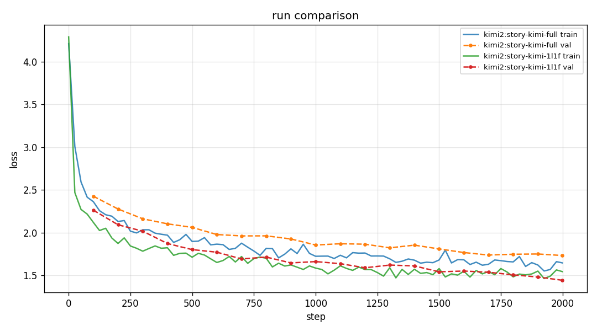
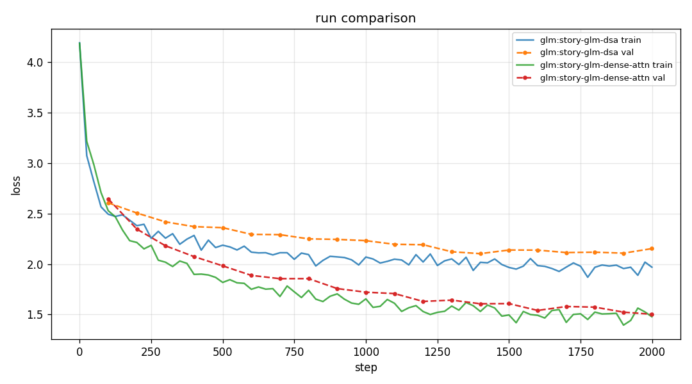
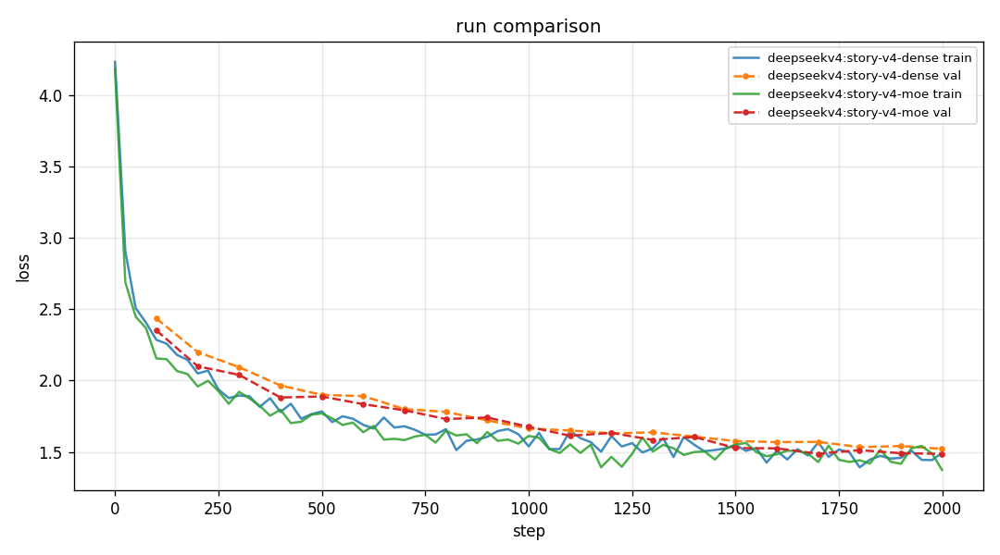

smollms / experiment report / July 2026
i trained four tiny LLMs on Shakespeare. then i tried to figure out what they were actually doing.
Qwen-style dense attention, Kimi-style recurrence, GLM-style token selection, and DeepSeek V4-style compressed memory. All small enough to read without getting lost.
01 / question
why i made this
Big model papers usually change five things at once. There is a new attention trick, a router, a cache layout, a training recipe, and a GPU kernel.
I wanted to pull those ideas apart without needing a cluster or pretending I had reproduced a frontier model.
So every model here predicts the next character in Tiny Shakespeare. That makes the task almost silly. Good. It means I can stare at one mechanism, change it, and run the same little experiment again.
the actual question: what changed inside the model, did the run get better or worse, and what did it cost?
This is not a Qwen, Kimi, GLM, or DeepSeek reproduction. It is my stripped-down version of a few ideas from those families. The useful bit is the comparison, not the generated Shakespeare.
02 / method
start with a normal decoder
I start with a plain causal decoder: character embedding, position information through RoPE, RMSNorm, attention, SwiGLU, residual connections, and a tied output head. Nothing clever happens before the comparison starts.
Each block does two different jobs. Attention mixes information between positions. The SwiGLU MLP changes features within one position. Keeping those jobs separate is how I avoided changing the whole model at once.
Every run saves its arguments, final configuration, corpus fingerprint, loss history, samples, plot, summary, and checkpoint. The repo keeps the small artifacts and comparison plots. Local runs keep the heavy stuff too.
03 / architectures
what each model actually does
Dense / Qwen-style control
At position t, every attention head scores tokens 0…t, softmaxes those scores, and takes a weighted sum of their values. Then every token goes through the same SwiGLU MLP. There is no routing and no compressed history.
This is the thing the other branches have to beat. It gets a direct read of every earlier character, and it has very few places for a toy implementation to make a mistake.
Kimi-style: recurrent memory and latent routing
First I replace the dense MLP with LatentMoE. A token goes from d_model down to a smaller latent vector. A router picks its top-k specialists in that smaller space.
Their outputs are mixed with an always-on shared expert, then projected back up.
Then comes the attention experiment. KDA keeps one head_dim × head_dim state per head. For each token it decays old state, predicts the current value from its key, and writes only the residual error.
The next query reads that state. Old context lives in a recurrence, not in a list of K/V vectors.
Gated MLA still does full causal attention, but stores a smaller latent per token and reconstructs K and V from it. The 1L1F run alternates KDA and Gated MLA.
all_full keeps full attention in every layer. AttnRes is off for this comparison.
GLM-style: select, then read
The GLM branch adds a separate, smaller query/key pair just for choosing tokens. For every head and query position, that indexer scores the causal prefix and keeps top-k positions.
Normal attention then runs only on the gathered K/V vectors, with the index score added back into the final attention score.
Important caveat: this toy still builds the whole index-score matrix before taking top-k. It is testing whether learned selection helps model quality at 64 characters. It is not testing a sparse kernel or long-context speed.
Layer one keeps a dense SwiGLU. Later layers use sigmoid-routed experts plus one shared expert. The dense-attention GLM control uses that exact same channel mixer, so the comparison is really selector versus no selector.
DeepSeek V4-style: exact nearby context, compressed old context
This branch gives a query two reads. One is ordinary causal attention over the most recent local window. The other reads an older prefix made from learned chunk summaries plus a small raw boundary.
The two outputs are added before the output projection.
A completed old chunk is flattened per head and passed through learned K and V compression layers. The chunk currently crossing the local-window boundary stays raw.
That annoying-looking boundary rule matters: without it, a few old tokens disappear whenever the window cuts through a chunk.
The mixed-MoE variant uses token-ID hash routing only in its first layer, then learned sqrt-softplus routing later. The dense version leaves the attention layout alone and uses SwiGLU instead.
So this result is about the channel mixer, not compressed attention versus full attention.
04 / experiments
how i compared them
These models have different parameter counts and different work per token, so putting all seven runs in one winner table would be kind of fake. I only compare pairs where one important thing changes.
| Question | Hold fixed | Change |
|---|---|---|
| Does Kimi hybrid attention help? | Kimi MoE, width/depth, seed, data, optimizer, AttnRes off | all_full vs 1L1F |
| Is the GLM selector the bottleneck? | Dense-prefix routed MoE, seed, data, width/depth, optimizer | DSA vs dense attention |
| Does V4 mixed MoE help? | Local-compressed attention, seed, data, width/depth, optimizer | Dense SwiGLU vs hash-then-routed MoE |
I check the boring things first: corpus fingerprint, seed, context length, optimizer, steps, device, parameter count, and wall time. Then I look at validation loss. Samples are fun, but they do not decide the result.
05 / results
what happened
Kimi: better loss, 4.6× more time
| Schedule | Parameters | Validation loss | Wall time |
|---|---|---|---|
all_full | 387,072 | 1.7335 | 243.6 s |
1L1F | 469,888 | 1.4441 | 1,118.6 s |

GLM: the selector lost to dense attention here
| Token mixer | Parameters | Best / final validation loss | Wall time |
|---|---|---|---|
| DSA top-k selector | 1,454,080 | 2.1032 / 2.1531 | 369.7 s |
| Dense attention | 1,388,544 | 1.5021 / 1.5021 | 253.0 s |

DeepSeek V4: a small MoE gain, with a real bill
| Channel mixer | Parameters | Validation loss | Wall time |
|---|---|---|---|
| Dense SwiGLU | 833,024 | 1.5215 | 244.7 s |
| Hash-then-routed MoE | 1,289,728 | 1.4865 | 355.1 s |

06 / learnings
what i learned
- The normal dense decoder is really hard to beat when the context is 64 characters. It sees all of the history and has fewer moving parts.
- The Kimi schedule learned better in this run. That result comes attached to a 4.6× runtime increase, which makes the loss number only half the story.
- The GLM result was useful because it narrowed the problem down. With the MoE held fixed, the selector is what made this toy worse.
- The V4 MoE result is too small for me to get excited about yet. It improved one seeded run, but it also made the model bigger and slower.
- “This learned selector did not help at 64 characters” is a perfectly fine result. It is more honest than declaring an architecture good or bad in general.
Stuff this does not tell you: which model wins at scale, which one is faster on a GPU, whether any result survives many seeds, or how these ideas behave with BPE tokens and real context lengths. That needs a different experiment.
07 / reproduce
run it yourself
python3 -m venv .venv source .venv/bin/activate python -m pip install -e ".[dev]" SEED=1337 DEVICE=cpu STEPS=2000 sh scripts/train_story_suite.sh python -m smollms.compare runs/<run_a> runs/<run_b>
Each run gets a directory you can reopen later. If something looks interesting, run the pair with more seeds before saying it is a pattern. The full walkthrough, code, and raw summaries are in the repository.